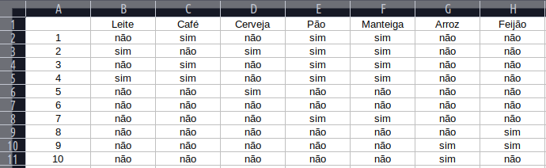

Regras sobre relações e co-ocorrênciasem bases de dados:
Se X ocorre na base de dados, então Y também ocorre (com alguma relação a X);
Co-ocorrência: se X, Y e Z ocorrem na base de dados então A também ocorre (com alguma relação a X, Y e Z).
X, Y e Z são os antecedentes da associação; A é o conseqüente.
O suporte serve para comparar quais dados estão relacionados.
Para saber isso fazemos o cálculo de suporte em que é usado a seguinte fórmula -> suporte x/10 (Quantas vezes um item apareceu sobre o tamanho da base, sendo o 10 nesse caso!).

exemplo :
suporte X/10
|leite 20%
|café 30%
|cerveja 20%
|pão 50%
|manteiga 50%
|arroz 20%
|feijão 20%
É utilizado para saber quanto um dado está relacionado a outro. (Quantas vezes o leite e o café aparecem juntos)
confiança entre leite e café:
leite X café = 2 de 3 ½ (A cada duas pessoas que compram leite uma leva café)
confiança entre pão e manteiga:
pão X manteiga = 5 de 5 100,00% (A cada cinco pessoas que compram pão tambem compram manteiga)
confiança entre arroz e feijão:
arroz x feijão = 1 de 1 50% (A cada duas pessoas que comprar arroz uma compra feijão)